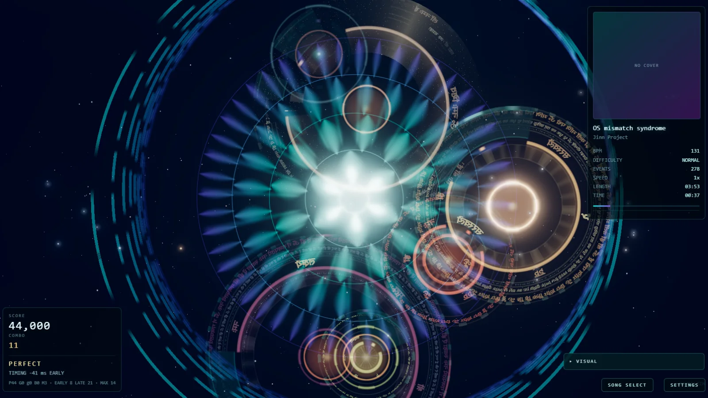
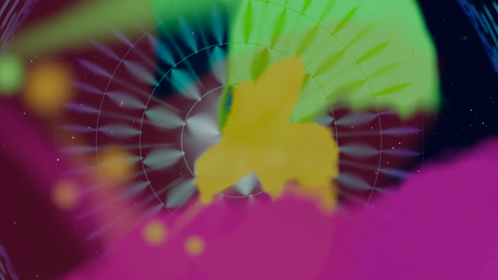
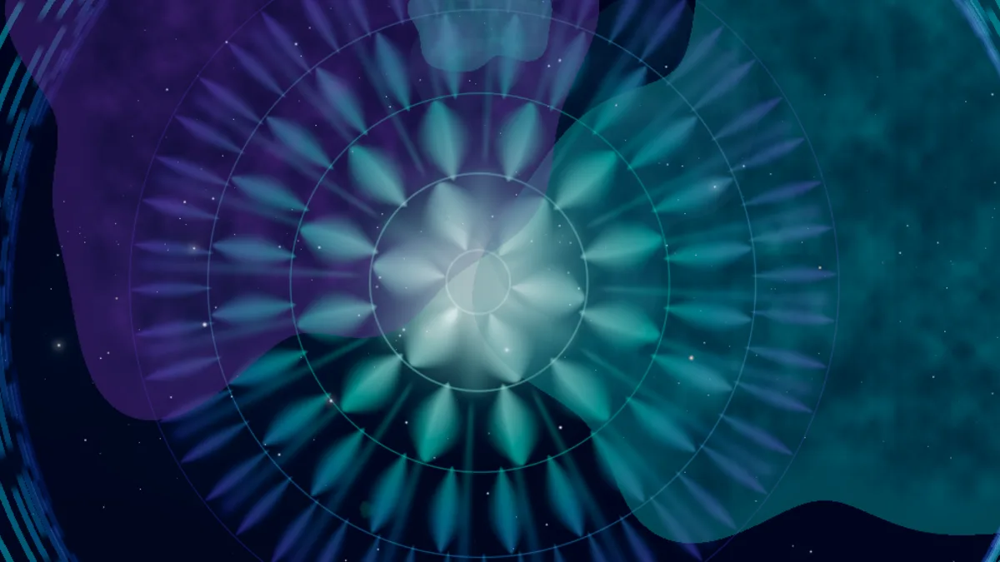
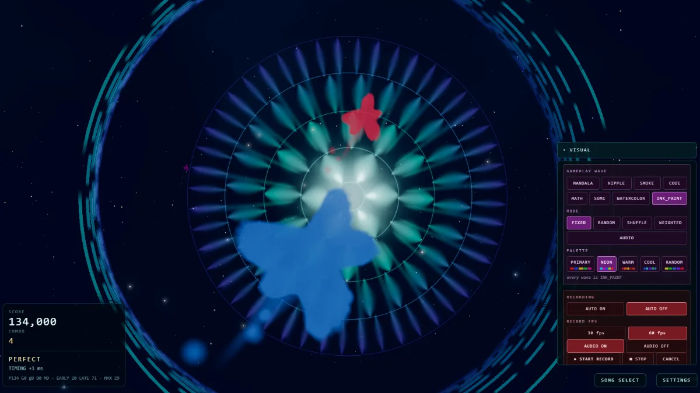
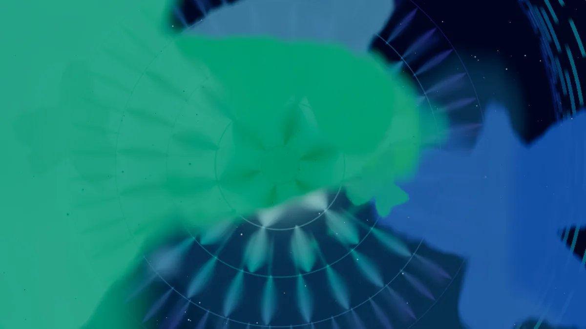
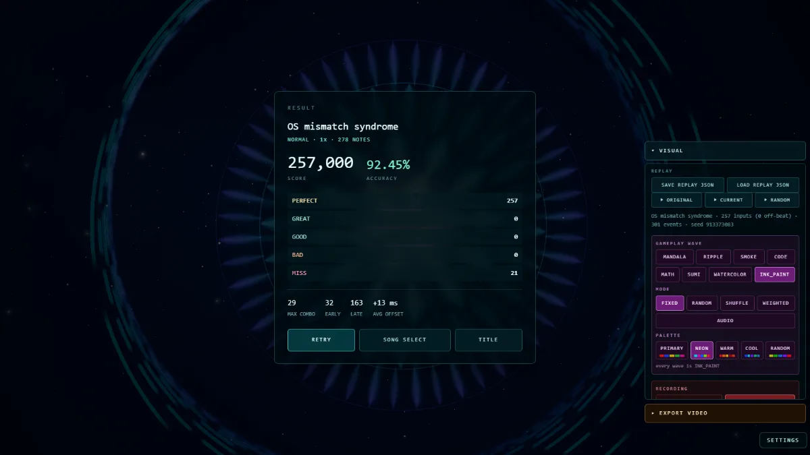

Read the wave,
meet the beat.
Waves converge on the mandala. Tap when they arrive. Judgement runs PERFECT / GREAT / GOOD / BAD / MISS, with early and late timing tracked separately.
JINN PROJECT / GAME
Rhythm Game × Real-time Generative Art
Play a song, and the way you play it paints the picture.
Runs in a modern desktop browser. No install. Songs are not bundled — bring your own SongPack.

01 / ABOUT
Mandalizm is a rhythm game whose output is a piece of generative art. Waves rise with the music and converge on the centre; you meet them in time. Every judgement, position and moment feeds the renderer, so a run does not just score — it accumulates into an image that only that performance could have made.
Waves converge on the mandala. Tap when they arrive. Judgement runs PERFECT / GREAT / GOOD / BAD / MISS, with early and late timing tracked separately.
The same events that are scored are handed to the visual engine. Ink spreads, pigment mixes, smoke drifts — the canvas keeps what happened rather than resetting each beat.
02 / HOW TO PLAY
Open the game and choose IMPORT SONGPACK. A pack holds the audio and its charts.
Pick a difficulty and a wave speed, then meet the waves as they arrive.
Your hits, misses and positions become the artwork while you play.
Score, accuracy and timing, with the finished image behind it.
Save the performance as data, record the screen, or re-render it as video.
Mandalizm ships without music, because a SongPack carries the audio it was built from and the rights differ song by song. The first launch shows 0 songs — that is the normal starting state, not an error. Use IMPORT SONGPACK to load a pack, and the title screen becomes playable straight away.
Don’t have a SongPack? Download one generated by Mandalizm ↓
03 / VISUAL ART SYSTEM
A wave is not drawn one fixed way. The same gameplay event can arrive as ink, as a watercolour wash, as smoke, as text, as geometry. Choosing the material changes what the run leaves behind — the rules of the game do not move.



The material used for the waves you play against is one setting. What fills the field behind them is another. They can be combined freely, so the same chart can be a quiet ink study or a dense collision field.
Waves can also be assigned a fixed material, shuffled, weighted, or chosen from what the music is doing at that moment.
04 / PALETTE
A palette is not a UI theme. It decides the pigment the run is painted with, so the same chart played with the same material comes out as a different picture.

PRIMARY · NEON · WARM · COOL · RANDOM — available on the pigment materials, INK_PAINT and WATERCOLOR.
05 / KEEP A RUN
They are easy to confuse, so the game keeps them apart — and so does this page.
What you did: the inputs and judgements of a performance, saved as a small JSON file. Load it back to replay the run, or feed it to the exporter.
SAVE / LOAD REPLAY JSONWhat the screen showed: the canvas and the song captured as they happen, at 30 or 60 fps, with the audio branched from what you hear.
START RECORD → DOWNLOADA re-render: the replay drawn again frame by frame, away from real time, up to 4K with the audio muxed in.
EXPORT VIDEO
06 / GENERATED SONGPACKS
These are not hand-authored charts. Mandalizm interpreted the music and generated the playable charts automatically. Download a SongPack, open Mandalizm, and choose IMPORT SONGPACK.
Generated SongPack · 44.64 MB
Download SongPack ↓Generated SongPack · 19.32 MB
Download SongPack ↓Generated SongPack · 41.16 MB
Download SongPack ↓Generated SongPack · 56.13 MB
Download SongPack ↓Generated SongPack · 23.97 MB
Download SongPack ↓Generated SongPack · 40.4 MB
Download SongPack ↓Generated SongPack · 48.6 MB
Download SongPack ↓Generated SongPack · 52.95 MB
Download SongPack ↓Auto-generation is part of the project: the machine decides how the music becomes gameplay. Timing and generation may continue to change as the engine develops.
07 / TECHNICAL NOTES
08 / PLAY
Source-available, all rights reserved. See the repository for the licence.